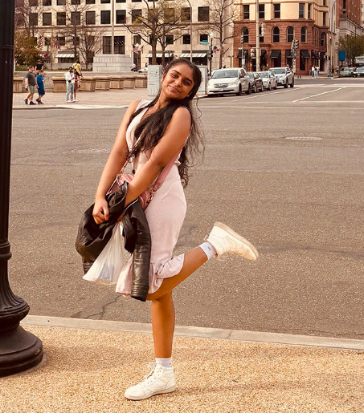

About

I'm a Computer Science major at Washington University in St. Louis with a passion for ceramics. Originally from Bengaluru, India, I bring a unique perspective as an international student bridging the worlds of technology and art.
While my primary focus is in computer science and engineering, I'm equally passionate about creating ceramic art and sharing this creative journey with you. This intersection of technical precision and artistic expression drives my work and defines my unique approach to both fields.